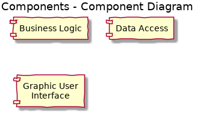

Welcome to journey-docs’s documentation!¶
Application architecture¶
talk about 2 primary components journey app and journey collector
sdf
3. Repositories Name Location Purpose Active developers in repository

![title Micro services inter communication
actor User
box "Journey app" #LightBlue
participant "Web\n(Django app\nand Footprint API)" as Web
participant "Db\n(PostreSQL)" as Db
participant "Docs store\n(ArangoDB)" as Arango
participant "Queue\n(Redis and\nRQ worker)" as Queue
participant "Collector image" as Collector
endbox
participant "GitHub API\n(external)" as GitHub
User -> Web : execute defined Job
activate Web
Web -> Db : create new JobLog
activate Db
Db -> Web : new JobLog ID
deactivate Db
Web -> Queue : put job to queue
activate Queue
Web -> User : job was started
deactivate Web
Queue -> Collector : HTTP request\nJSON key
activate Collector
Collector -> GitHub : HTTP request\nGET 20 commits
activate GitHub
GitHub -> Collector : HTTP response\n20 commits
deactivate GitHub
Collector -> GitHub : HTTP request\nGET 20 commits
activate GitHub
GitHub -> Collector : HTTP response\n20 commits
deactivate GitHub
Collector -> Web : HTTP request\nPOST to Footprint API
activate Web
Web -> Arango : save raw commits
activate Arango
Arango -> Web : confirm
deactivate Arango
Web -> Collector : HTTP response CREATED / 201
deactivate Web
Collector -> Queue : HTTP response\ncollecting finished
deactivate Collector
Queue -> Db : update JobLog\nstatus=finished
deactivate Queue](_images/plantuml-0dc104a0aa19affb193e16066494b782a54303a0.png)
App¶
![(*) --> "Find Event"
"Find Event" -> "Attend Event"
if "Capacity?" then
->[ok] "Create Ticket"
else
-->[full] if "Standby?" then
->[ok] "Standby Ticket"
else
-->[no] "Cancel Ticket"
"Cancel Ticket" --> (*)
endif
endif
"Create Ticket" --> ==show==
"Standby Ticket" --> ==show==
==show== --> "Show Ticket"
"Show Ticket" --> (*)](_images/plantuml-06be252128aca03233e5283a18f1224f487a8782.png)
Collector¶
Database Schema¶
![title Journey app relational DB model
object Job
object Catalog
object Key
object Vault
object Schedule
object "Job log" as JobLog
Vault : encrypted payload JSON
Job : key
Job : job
Catalog : group = 'vcs'
Catalog : type = 'commit'
Catalog : source = 'github'
Key : catalog
Key : payload JSON
Schedule : cron
JobLog : timestamp
Key "1" -right- "0..1" Vault : Encrypted\nsubset of Key
Job "0..1" -up- "1" Key : Jobs of key
Job "0..1" -left- "1" Catalog : Jobs of catalog
Schedule "0..1" -down- "1" Job
JobLog "0..*" -left- "1" Job : manual\nexecution of Job
JobLog "0..*" -- "1" Schedule : scheduled\nexecution of Job](_images/plantuml-30fc143fb885ea1633201a0b150b0af09330c218.png)
Languages¶
Frameworks¶
Libraries / Packages / Modules¶
Database¶
Version numbers¶
Falcon¶
Hello Adria, Sumit and Marian.
Sending brief intro into current state of project, just to speed up call.
Technical stack and what has been built so far
Primary language is Python, we use both 2.7 and 3.5. In this stage app consists of 2 parts, collector tool and app itself.
Collector - all currently implemented collectors bundled together to single docker image with all dependencies, written in Python 3.5. Image as 2 interfaces: - command line, where image can be used as standalone tool to import data into Journey app - http rest api (using Falcon), this interface is used by Journey app itself, it iterates with collectors using this API and uses integrated collectors using JSON keys
Journey app - set of services put together to create Journey server web application. - core is written in Python 2.7, Django is used as Web framework. - primary models for web app are modeled in traditional relational PostgreSQL - currently for storing raw objects/documents from imports MondoDB is used, this is currently being replaced with ArangoDB - as cache service Redis is used, for storing sessions, and primary Django cache backend - for queuing and scheduling Python’s RQ (Redis Queue) is used - and finally as written above, collector with it’s REST API in Falcon is bundled together with app, app than calls collectors using this API to import data on manual or scheduled basis
For issues and sprint planning and as docker registry we use Gitlab.
There is single VM/droplet created on Digital Ocean, for demo purposes when needed.
Current tasks / development
- research story MongoDB with Neo4J vs. ArangoDB, decide what DB store will be used for storing raw collected documents and then graph data / relations between documents, result is we are switching to ArangoDB as it can efficiently replace both MondoDB with Neo4j, it’s scripting language Foxx is great for dynamical scripting, from performance point of view it stands against both specialists Mongo/Neo; using single datastore for documents, graph and also classical key/value storage has multiple benefits from architecture point of view
- rewriting Collector API (part of Journey app), storing data in Arango
- data validation
- creation of initial graph data and relations
- preparation of queries of both document data and graphs for simple views for evaluation and preparation for final visual views
- simple views for testing queries
Brief list of tasks needed to be done for MVP-lite
To be able to present product to potential clients, we need to show full scale of application, from processing raw available data till final visual D3JS views that will show clients what is benefit of using Journey app, how it can analyze client’s devops process, and identify problematic workflow or complicated issues.
What is still missing and needs to be done to achieve this: - finish rewrite to ArangoDB - start to model graph data and create even more relations - prepare as much queries from these data as possible - find ideal way of visualize these data in views, use great mock ups already created - choose ideal open source project that will at best possible level show possible potential of Journey app
API¶
moved to RAML